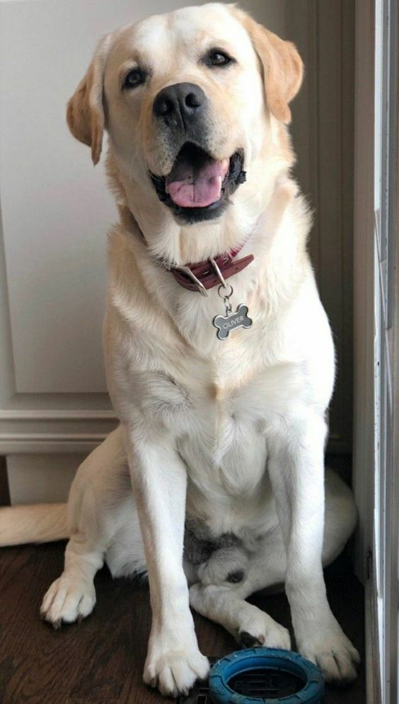
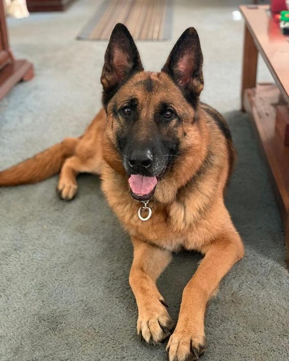
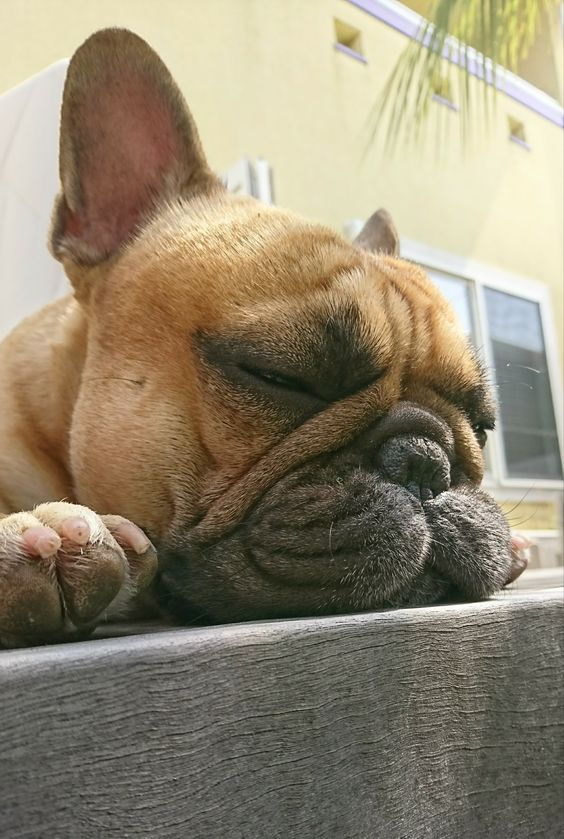
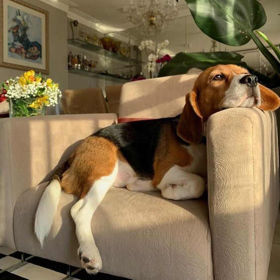
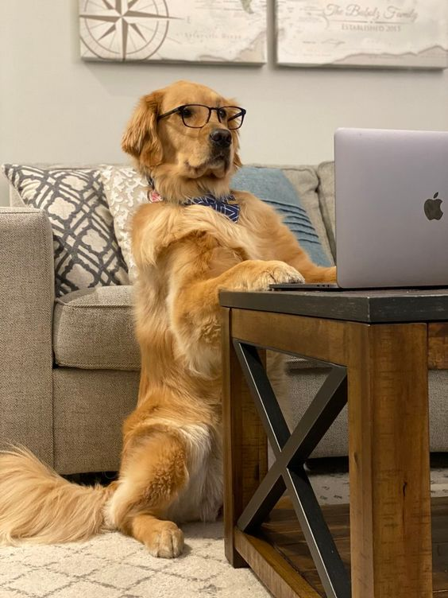

Explorează lista câinilor noștri disponibili și găsește-ți noul prieten loial!
| Imagine | Nume | Rasă | Vârstă | Descriere |
|---|---|---|---|---|
|  | Bella | Labrador | 2 ani | Bella este o cățelușă iubitoare și jucăușă, perfectă pentru familiile cu copii. |
|  | Max | Ciobănesc German | 3 ani | Max este energic și inteligent, ideal pentru stăpâni activi care iubesc aventura. |
|  | Luna | Buldog Englez | 5 ani | Luna este blândă și liniștită, preferă plimbările scurte și este foarte afectuoasă. |
|  | Rocky | Beagle | 4 ani | Rocky este curios și inteligent, potrivit pentru familiile care își doresc un prieten curios. |
|  | Sasha | Golden Retriever | 2 ani | Sasha este jucăușă și prietenoasă, se înțelege bine cu toată lumea, inclusiv cu alți câini. |